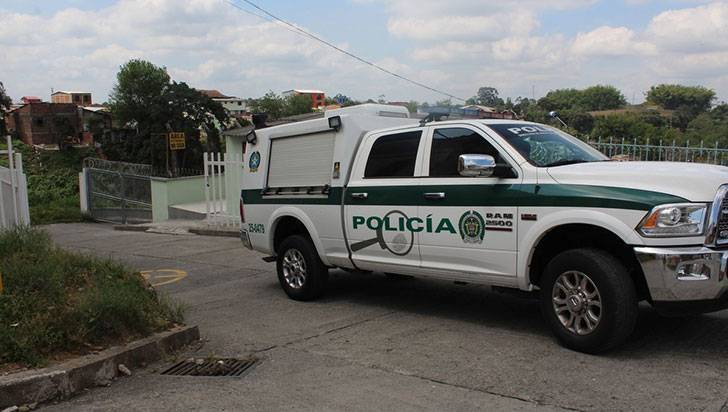

Estas noticias exponen diferentes casos de asesinatos en distintos paises. Esta tambien es una mal llamada nota roja, los hechos suceden en Colombia, Madrid, Brasil,etc...
Luisa Maiam Miranda es la creadora de esta seccion de noticias.
Noticias:
Se trata de Rubén Darío Dagua, asesinado aparentemente por el frente 'Jaime Martínez'. Según la Asociación de Cabildos Indígenas del Norte del Cauca (Acín), el pasado 10 de enero, hombres armados secuestraron al comunero Rubén Darío Dagua, de 43 años en el sector La Concha, jurisdicción del municipio de Buenos Aires.
"Ante los hechos, la familia, las autoridades y la guardia indígena, así como autoridades, crearon una comisión de búsqueda que resolvió poner el caso en conocimiento de la mesa de diálogos entre el Gobierno y el Estado Mayor Central de las Farc”, afirmó la organización indígena". Lamentablemente el 14 de enero la comisión recibe respuesta del asesinato de Dagua y un día después, el frente 'Jaime Martínez' entregó el cuerpo. leer más

luego de que ‘le escribiera a su novio’ Los celos habrían ocasionado esta tragedia. los últimos días, se conoció la historia de Ana Beatriz Machado, la mujer que perdió la vida a manos de una de sus compañeras de trabajo, esto después de que un chisme desencadenará una cadena de eventos fatales.
La mujer fue apuñalada en varias ocasiones, esto ocurrió en una ciudad de Brasil. Esto se sabe.
La violenta agresora fue identificada como Sara Nunes Ferreira y medios locales han informado que fue detenida el pasado domingo 7 de enero. El desafortunado hecho quedó registrado en video por las personas presentes en el lugar y rápidamente se hizo viral en las diferentes redes sociales, en la grabación se observa a las dos involucradas tiradas en el suelo del bar y cómo un hombre intenta separarlas. leer más

La autoridad americana aseguró que, entre el 1.° de noviembre y el 31 de diciembre de 2023, conoció ocho muertes de estadounidenses en la capital de Antioquia en circunstancias "sospechosas".
"No se cree que estas muertes estén relacionadas, ya que cada una involucra circunstancias distintas; sin embargo, varias de las muertes apuntan a posibles drogas, robo y sobredosis, y varias involucran el uso de aplicaciones de citas en línea", sentenció.
La Embajada de Estados Unidos alertó a sus ciudadanos para "estar atentos, mantener una mayor conciencia situacional e incorporar sólidas prácticas de seguridad personal en sus actividades" cuando visiten Medellín. leer más
ONU reporta 69 casos verificados este 2023.arlos Alberto Romero Martínez, un reconocido líder campesino, representante legal y líder de la Asociación de pequeños Agricultores del Magdalena Medio, es el último líder social asesinado en Colombia.
Las cifras de la Fiscalía dan cuenta que entre enero y noviembre de este año se reportaron 148 homicidios de defensores de derechos humanos (es decir, tres cada semana) y el año pasado fueron 212; mientras que la Defensoría del Pueblo reportó que en el mismo periodo fueron asesinados 163 líderes, lideresas y personas defensoras de derechos humanos.
El organismo indica que los casos verificados son aquellos en los que se ha comprobado el carácter de defensor de la persona, de acuerdo con la definición de la ONU sobre defensores de derechos humanos. leer más

Para un hombre acusado de asesinar en octubre de 2021 al propietario del bar People, un local de ambiente en el Gayxample de Barcelona, para después robarle la billetera y otros objetos de valor que había en el domicilio del fallecidoLa Fiscalía pide 26 años y tres meses de prisión.
Además, solicita el pago de una indemnización de 150.000 euros, así como la imposición de una medida de libertad vigilada cinco años superior a la pena impuesta.
En un juicio que ha comenzado este lunes en la Audiencia de Barcelona tras la constitución del jurado popular, la Fiscalía ha solicitado 22 años de cárcel para el acusado por asesinato con alevosía, así como 4 años y tres meses por robo con violencia en casa habitada. leer más

Según han informado a EFE fuentes de la acusación, el juez del proceso leyó, en una vista celebrada este martes, la sentencia en la que considera probados los hechos que se le imputaban a Hanid Ortiz y le condena a 30 años de prisión, el máximo previsto en la legislación venezolana.
Un tribunal de Caracas (Venezuela) ha condenado a 30 años de cárcel al exmarine estadounidense Dahud Hanid Ortiz por matar a tres personas en un despacho de abogados del barrio madrileño de Usera en 2016, al considerar acreditado que fue el autor de los tres homicidios y del incendio provocado después. leer más
La policía científica examinó el piso en el que se encontraron los cadáveres este lunes por la tarde y descubrió que había puertas y ventanas precintadas y la llave del gas de la cocina abiertas.
Fuentes de la investigación señalan que presuntamente el padre, de 53 años, habría asesinado a sus hijos, Xavier y Noa, y después se habría suicidado llenando la casa de monóxido de carbono. Así, la autopsia revelará cómo los mató, ya que los cadáveres de los menores no presentaban lesiones externas cuando los bomberos de Barcelona entraron en la vivienda.
El Juzgado de Instrucción número 26 de Barcelona está a la espera de la autopsia de los dos menores, de 10 y 7 años, y de su padre, Francisco B.M., encontrados muertos por inhalación de monóxido de carbono en unos bajos del paseo Universal de Barcelona este lunes.Los Mossos d'Esquadra sospechan que se trata de un caso de violencia vicaria por lo que el padre, presuntamente, había querido matar a sus hijos y suicidarse para dañar a la madre, de la que estaba separado desde hacía tres años. leer más

Los Mossos d'Esquadra investigan la muerte de un hombre en Vilanova de la Barca (Lleida). La víctima, un agricultor, fue encontrada por un familiar con un golpe en la cabeza y sangre abundanete e inconsciente en una finca agrícola de este municipio. Los agentes recibieron el aviso sobre las dos de la tarde. Al lugar acudieron varias patrullas policiales y también efectivos del Sistema de Emergencias Médicas.
Los sanitarios no pudieron hacer nada para salvar la vida a la víctima que murió poco después por las heridas que sufrió en la cabeza, según fuentes policiales. Los Mossos buscan a varios sospechosos del crimen que podrían haber huido con el coche del agricultor fallecido, por lo que han activado varios dispositivos para atraparlos. Así, se han realizado controles en varias vías en dirección a Francia.

El joven español, quien confesó el crimen del médico colombiano, fue enviado a prisión provisional. En declaraciones con la agencia EFE, el joven señaló: "Soy culpable, pero yo era el rehén de Edwin. Me tenía como rehén. Era una jaula de cristal, pero era una jaula. Me hizo destruir la relación con mi novia, me ha obligado a hacer cosas que nunca hubiera hecho".
Cámaras de seguridad, con fecha de 1 de agosto, muestran a Daniel Sancho, quien arribó primero a la isla que su compañero, en un supermercado, comprando un cuchillo, bolsas de basura, productos de limpieza y otros utensilios que, al parecer, fueron utilizados en el asesinato del cirujano.
El chef, según el relato que fue compartido por medios de comunicación internacionales, introdujo los restos en bolsas de basura, que posteriormente arrojó al mar y a un botadero de la isla. En el hotel donde se hospedaba, las autoridades hallaron "80 mil dólares estadounidenses y un collar de oro que pertenecía al colombiano". leer más

Se trata de Francisco Omar "N", alias el Verdus, acuerdo con la fiscalía, lograron datos de prueba que lo relacionan con el caso tras seguir sus movimientos mediante trabajo inteligencia y análisis de información.
La Fiscalía General de Justicia del Estado de Guanajuato dio a conocer la detención de uno de los presuntos autores materiales del multihomicidio de cinco estudiantes de medicina localizados el 3 de diciembre en las instalaciones de la Universidad de Guanajuato Campus Celaya-Salvatierra.
Se dio a conocer que en las próximas horas el inculpado será llevado ante un Juez, para que un agente del Ministerio Público le formule imputación y solicite su vinculación a proceso penal.leer más